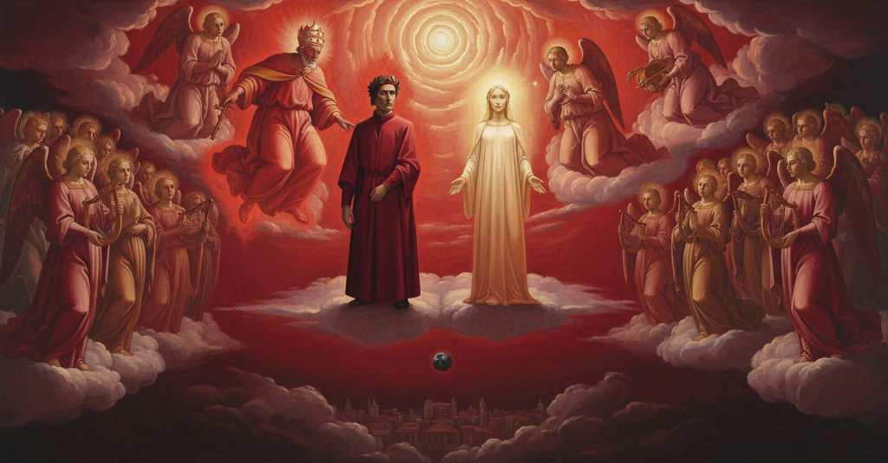

Paradiso — Canto 27

Riassunto Summary 要約
Dopo la violenta invettiva di San Pietro contro la corruzione papale, Dante ascende al Primo Mobile dove Beatrice gliene spiega la natura e profetizza la futura redenzione dell'umanità.
After Saint Peter's violent invective against papal corruption, Dante ascends to the Primum Mobile where Beatrice explains its nature and prophesies humanity's future redemption.
聖ペテロが教皇庁の腐敗を激しく非難した後、ダンテは原動天へと昇り、そこでベアトリーチェはその本質を説明し、人類の未来の救済を預言する。
Segmento 1 1–18
Tutto il Paradiso intona il 'Gloria' alla Trinità, un canto così dolce da inebriare Dante. Questa gioia gli appare come il riso dell'universo, un'ebbrezza che entra in lui sia attraverso l'udito che la vista. Davanti ai suoi occhi, delle quattro anime esaminatrici, la prima luce, quella di San Pietro, si fa più viva e cambia colore, diventando rossa come diventerebbe il pianeta Giove se prendesse il colore di Marte. Poi la Provvidenza divina impone il silenzio a tutto il coro celeste.
All of Paradise intones the 'Gloria' to the Trinity, a song so sweet that it inebriates Dante. This joy appears to him as the smile of the universe, an ecstasy that enters him through both hearing and sight. Before his eyes, of the four examining souls, the first light, that of St. Peter, becomes more vivid and changes color, turning red as the planet Jupiter would if it took on the color of Mars. Then divine Providence imposes silence upon the entire celestial choir.
天国全体が三位一体に「グロリア」を唱え、その甘美な歌声がダンテを陶酔させる。この喜びは彼には宇宙の微笑みのように見え、聴覚と視覚の両方を通して彼の中に入ってくる恍惚感である。彼の目の前では、彼を試問した四つの魂のうち、最初の光、聖ペテロの光がより輝きを増して色を変え、あたかも木星が火星の色を帯びたかのように赤くなる。やがて、神の摂理が天の合唱隊全体に沈黙を命じる。
Segmento 2 19–66
San Pietro, trascolorando in rosso per l'ira, pronuncia una violenta invettiva contro il suo usurpatore sulla terra, Bonifacio VIII, che ha trasformato il papato in una cloaca. Tutto il cielo si tinge dello stesso colore rosso dell'indignazione, e Beatrice arrossisce come una donna onesta per la colpa altrui. Pietro contrappone i primi papi martiri, che diedero il sangue per la fede, ai papi moderni avidi d'oro, che fomentano la guerra tra cristiani e vendono falsi privilegi. Denunciando i "lupi rapaci" vestiti da pastori e prevedendo la corruzione dei futuri papi guasconi e caorsini, profetizza un imminente soccorso della Provvidenza divina e ordina a Dante di non nascondere nulla di ciò che ha udito una volta tornato nel mondo.
Saint Peter, turning red with anger, delivers a violent invective against his usurper on Earth, Boniface VIII, who has turned the papacy into a sewer. All of heaven is tinged with the same red color of indignation, and Beatrice blushes like an honest woman for another's fault. Peter contrasts the first martyred popes, who gave their blood for the faith, with the modern popes greedy for gold, who foment war among Christians and sell false privileges. Denouncing the "rapacious wolves" dressed as shepherds and foreseeing the corruption of future Gascon and Cahorsin popes, he prophesies the imminent help of divine Providence and orders Dante to hide nothing of what he has heard once he returns to the world.
聖ペテロは怒りで赤く染まり、地上で彼の地位を簒奪し、教皇庁を汚水溜めに変えてしまったボニファティウス8世に対して激しい非難を口にする。天全体が同じ憤りの赤色に染まり、ベアトリーチェも他人の過ちのために貞淑な女性のように顔を赤らめる。ペテロは、信仰のために血を流した初期の殉教した教皇たちと、金に貪欲で、キリスト教徒間の戦争を煽り、偽りの特権を売りさばく現代の教皇たちを対比させる。彼は羊飼いの衣をまとった「貪欲な狼」を糾弾し、未来のガスコーニュ出身とカオール出身の教皇たちの腐敗を予見しつつ、神の摂理による間近な救いが訪れることを預言し、地上に戻った暁には聞いたことを何一つ隠してはならないとダンテに命じる。
Segmento 3 67–99
Le anime trionfanti salgono verso l'alto come fiocchi di neve al contrario. Su invito di Beatrice, Dante abbassa lo sguardo e vede di aver percorso metà del mondo abitato, dall'Atlantico di Ulisse alla costa fenicia, e percepisce la Terra come una piccola "aiuola". Distoglie lo sguardo da essa per rivolgerlo a Beatrice, la cui bellezza divina supera qualsiasi opera d'arte o della natura. La virtù del suo sorriso lo strappa dal nido di Leda (i Gemelli, nell'ottavo cielo) e lo spinge nel cielo velocissimo, il Primo Mobile.
The triumphant souls ascend upwards like reverse snowflakes. At Beatrice's invitation, Dante looks down and sees he has traversed half the inhabited world, from Ulysses's Atlantic to the Phoenician coast, and perceives the Earth as a small "threshing-floor". He turns his gaze from it to look at Beatrice, whose divine beauty surpasses any work of art or nature. The power of her smile tears him from the nest of Leda (Gemini, in the eighth heaven) and propels him into the swiftest heaven, the Primum Mobile.
勝ち誇る魂たちは、逆さまの雪のように天へと昇っていく。ベアトリーチェに促され、ダンテは下方を見下ろし、自分が人の住む世界の半分を、オデュッセウスの大西洋からフェニキアの海岸まで旅したことを知り、地球を小さな「脱穀場」として認識する。彼はそこから視線をそらしてベアトリーチェに向けるが、その神々しい美しさは、いかなる芸術作品や自然をも凌駕する。彼女の微笑みの力は、彼をレダの巣（第八天の双子座）から引き離し、最も速い天である原動天へと押し上げる。
Segmento 4 100–148
Beatrice spiega la natura del nono cielo, il Primo Mobile: non ha un luogo fisico ma esiste solo nella Mente Divina, da cui trae origine ogni moto e il tempo stesso. Poi lancia un'invettiva contro la cupidigia che corrompe gli esseri umani, descrivendo come l'innocenza dei bambini si perda con la crescita. Un bambino che prima digiuna poi divora ogni cibo, e uno che ama la madre poi desidera vederla morta. La causa di questo traviamento è l'assenza di un governo sulla Terra. Beatrice conclude però con una profezia: prima che il calendario venga corretto, un intervento divino capovolgerà la situazione, facendo sì che la nave dell'umanità proceda diritta e che al fiore segua il vero frutto.
Beatrice explains the nature of the ninth heaven, the Primum Mobile: it has no physical location but exists only in the Divine Mind, from which all motion and time itself originate. She then launches an invective against the cupidity that corrupts human beings, describing how the innocence of children is lost as they grow. A child who first fasts then devours any food, and one who loves his mother then desires to see her dead. The cause of this straying is the absence of government on Earth. Beatrice concludes, however, with a prophecy: before the calendar is corrected, a divine intervention will turn the situation around, causing the ship of humanity to proceed straight and true fruit to follow the flower.
ベアトリーチェは第九天、原動天の本質を説明する。それは物理的な場所を持たず、神の心の中にのみ存在し、そこからあらゆる運動と時間そのものが生じる。次に彼女は人間を堕落させる強欲を激しく非難し、子供たちの無邪気さが成長と共にいかに失われるかを述べる。かつては断食していた子供があらゆる食物をむさぼり食うようになり、母親を愛していた子供がその死を望むようになる。この堕落の原因は、地上に統治者がいないことにある。しかしベアトリーチェは預言で締めくくる。暦が修正される前に、神の介入が状況を覆し、人類という船をまっすぐに進ませ、花の後には真の果実が実るだろうと。